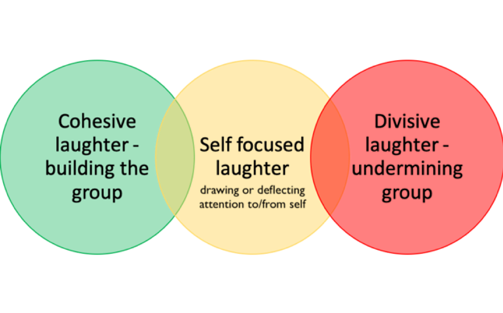
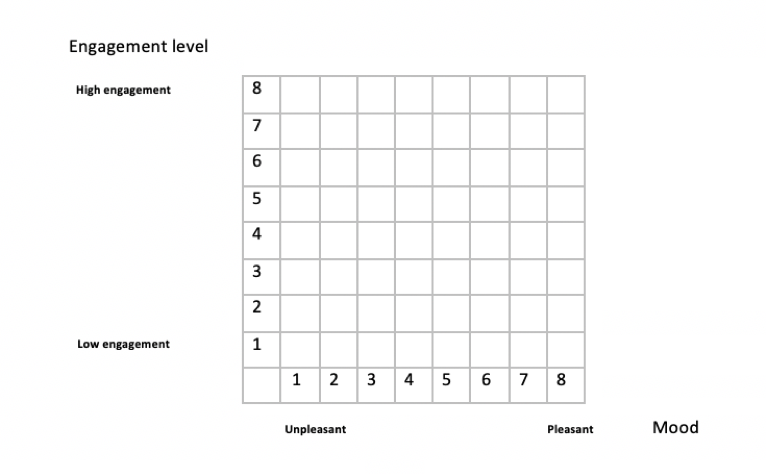

Visualizing
'the space between'
Visualizing energy shifts in group interactions
On this website you will find outputs of an early-stage methodology for visualizing energy shifts in group interactions. The visualization project emerged during empirical PhD research at the University of Bristol entitled Through conflict to sustainability: engaging with ‘the space between’ entities and individuals working in collaboration.
The visualizations on this site are the products of a team of three: Hen Wilkinson (PhD researcher, originator of the visualization concept and director of Community Resolve), data scientist Bobby Stuijfzand and graphic designer Derek Edwards.
The process started with the systematic visualization of energy levels in four participant task groups as a way of exploring the links between verbal and nonverbal communication in group interaction.
The graphs below illustrate group energy shifts over 5 minutes, with points of laughter during that time cutting across the energy lines. Laughter was added to see how its use correlated to energy shifts and conflict points in each of the groups. Once the data was assembled the team worked on the design aesthetics, in recognition of the impact of visual presentation on engagement with data.
We have written a blog, where we highlight some of the aesthetic considerations and also provide an insight into the theoretically underpinned framework we used to extract group dynamics from qualitative data. You can find it through this link. More detailed notes on the methodology and references can be found at the bottom of this page.
Presented below
- initial visualizations of four separate group interactions over five minutes, focusing specifically on a point of conflict in the discussions.
- interactive presentation of the rater team scores and how they led to the outcome of the energy lines below. This allows viewers to experience the original data themselves.
- text box drop-downs on the graphs below, which appear when the mouse hovers over each topic shift point on the line.
First UK Visualization
Engagement line

This graph shows the energy shifts across a five-minute field of tension in the group. Engagement levels are shown on the vertical axis and the shifting group mood in the group is indicated by the colour changes on the energy line.
As you roll over the black dots on the line, a dialogue box with the group interaction at that point will appear. Each of the black dots represents a change in conversation direction or meaning.Engagement and laughter line

This graph shows the same engagement line, but with an additional line indicating an incident of laughter and its tone. In this study, laughter was understood as falling along a spectrum of function from cohesive (green) through self-focused (yellow) to divisive (red). For more on the laughter classification, see methodology.
Rater lines
This graph shows how the initial data for the energy line was reached. The rater scores are the finer, faded out lines behind the main energy line. Click or hover over a faded-out line to see how the individual raters scored each meaning unit across the 5 minutes.
Second UK Visualization
Engagement line
Engagement and laughter line
Rater lines
First Dutch Visualization
Engagement line
Engagement and laughter line
Rater lines
Second Dutch Visualization
Engagement line
Engagement and laughter line
Rater lines
Research rationale
The premise of this research is that focusing on ‘the space between’ individuals and organisations working together provides insight into collaboration dynamics and sustainability. By making visible ‘hot spots’ in group interactions (Wrede & Shriberg 2003; MacLure 2013), it becomes easier to acknowledge and work with points of conflict that will inevitably arise. The research focused on beneath-the-surface dynamics in the group interactions to provide data around hot spots (Clarke & Hoggett 2009), doing so by identifying communication indicators that led into and out of moments of conflict or disruption.
The research design itself was influenced by a complex mix of professional experience and a desire to investigate human experiential space through a complexity frame (Kuhn & Woog 2007). Space was left for emergent outcomes that could be further explored as they arose, one of which was the data visualization project and its potential to simultaneously convey both verbal and nonverbal data. Although the impact of nonverbal communication on group and individual interaction is well recognised, some 75% of qualitative studies sideline this aspect of a group’s dynamic in their findings (Denham & Onwuegbuzie 2013).
To date, little attention has been paid to data visualization in qualitative research (Sloane 2009, Scagnoli & Verdinelli 2017), a term which is used here to refer to both an iterative process of visual thinking and interaction with data during the analysis stage as well as to the visual outputs (DiBiase et al. 1992). A starting point for this visualization project was how, on listening to the recordings, the nonverbal elements in the group interaction seemed to allow for or prevent connection and the flow of ideas. What happened in the space between participants was influenced just as much by the laughs, silences, sighs, asides and interruptions (nonverbal content) as by the actual words (verbal content). The notion arose of visualizing these tangible shifts of ‘energy’ in the group.
Energy Lines
Quinn et al.'s comprehensive 2012 review of cross-disciplinary literature in relation to research into 'human energy' notes that the study of human energy has had increasing attention from organisation scholars over past 20 years, in part because energy is seen as closely related to theories of motivation - different but related constructs. Drawing on their work, this visualization project uses ‘energy’ to refer to the affective, dynamic process of connection between individuals and/or an individual and the group.
Laughter Points
Laughter – as opposed to humour - has been relatively little explored in the literature although studies show that it is a behaviour that can correspond to several internal states and occurs frequently in group interaction. As here, most existing studies investigating the use and classification of laughter have used audio cues only (cf Holmes & Marra 2002; Gronnerod 2004) and there are very few examples of laughter classification according to function. Consequently, this study uses its own classification based on repeated listening to the four five-minute extracts visualized above. Laughter incidences were grouped into the following three broad and overlapping categories:Wilkinson 2019
Combining indicators of when and how laughter was used in the groups with the baseline group energy line visualizations provided additional qualitative source data which enriched the initial energy lines. It allowed us to see what - if any - correlation emerged between the use of laughter and the energy shifts in across each five-minute field of tension.
Methodology
Rigorous, systematic visualization of qualitative group data required an instrument able to measure energy across a five-minute time spam, and which could be tested for interrater reliability. This required identifying and refining an appropriate measurement instrument that could abstract rich information sources down to a couple of numbers (0 and 1). Once a relatively close instrument had been found within small group research studies (Lehmann-Willenbrock et al. 2011), a culturally mixed rater team – gender, age, nationality - applied it to a five-minute extract from each group to test its viability.
Each extract of data consisted of 2.5 minutes of interaction either side of a central mid-point clash or strong challenge. The transcripts and audio of each extract were sub-divided into meaning units - segments of text with one main idea as understood by other participants in the context of the meeting (cf Bales 1950). The rater team were then provided with these and asked to score each meaning unit in turn, marking their responses on a matrix provided - see the interactive rater graphs for each group, above, for a record of their scores.

The y axis on the matrix represented low (1) to high (8) engagement levels, relating to the number of voices in the conversation and the levels of interest, amusement or excitement. The x axis represented mood and ranged from unpleasant (1) to pleasant (8), assessed by the atmosphere or pervading tone. The culturally mixed rater team – gender, age, nationality - were invited to listen to ‘the spaces between’ participants rather than to what they said, and to work from instinct, trusting their responses and not to overthink. Although this sounds like an impossible task, and took some getting used to, recent studies suggest that working with audio data only can actually increase empathy in the researcher (Chandler et al 2015; Kraus 2017) and the rater team in this study were astounded by the nuanced levels they could hear in the audio clips.
Once the qualitative data had been converted into numerical values for three main variables - levels of mood and engagement as they shifted over a set period of time (5 minutes) – they were stored on data sheets and Bobby Stuijfzand used ggplot2, a data visualization package for the statistical programming language R, to generate some initial images. Following a decision to refine the aesthetics of the design by working with a graphic designer, he then moved to D3.js, a powerful and well-regarded software library used extensively to create interactive data visualizations on the web, to enable more functionality and which could accommodate for further developments in the project.
Design Research
Addressing the aesthetics of the data presentation was important at a number of levels, from making the images as accessible as possible to recognising that individuals would stay longer and take more from images they found attractive to look at.
The subsequent design research by Derek Edwards drew on multiple sources (cf Tufte 1989, DiBiase et al. 1992, Chandler et al. 2015) and included visual explorations of accessibility, of colour impact, of multi-layered research and into the use of pattern, texture, animation and shape in displaying qualitative data. Slides from the design research are shared through this link.
If you would like more information on this visualization project, or have a comment you would like to share, please contact the lead researcher Hen Wilkinson through this link to her page at the University of Bristol.
References
Bales, R. F. (1950). Interaction process analysis; a method for the study of small groups. Oxford, England: Addison-Wesley.
Chandler, R., Anstey, E. & Ross, H. (2015) Listening to Voices and Visualizing Data in Qualitative Research: Hypermodal Dissemination Possibilities, SAGE Open, 2015 - journals.sagepub.com
Clarke, S. & Hoggett, P. (2009) Researching Beneath the Surface: Psycho-Social Research Methods in Practice, Karnac Books, London
Denham M. & Onwuegbuzie A.J. (2013) Beyond Words: Using Nonverbal Communication Data in Research to Enhance Thick Description and Interpretation, International Journal of Qualitative Methods, Sage
DiBiase, D., Krygier, J.B., Reeves, C., MacEachren, A.M., Brenner, A. (1992) Animation and the role of map design in scientific visualization. Cartography and geographic information systems 19.4: 201-214.
Gronnerod, J.S. (2004) On the meanings and uses of laughter in research interviews, Nordic Journal of Youth Research, Sage
Holmes, J., & Marra, M. (2002) Having a laugh at work: How humour contributes to workplace culture. Journal of Pragmatics, 34(12), 1683-1710. http://dx.doi.org/10.1016/S0378-2166(02)00032-2
Kraus, M. W. (2017) Voice-only communication enhances empathic accuracy. American Psychologist, Vol 72(7), 644-654
Kuhn, L. & Woog, R. (2007) From Complexity Concepts to Creative Applications, World Futures: The Journal of New Paradigm Research, 63:3-4, 176-193
Lehmann-Willenbrock, N., Meyers, R., Kauffeld, S. & Neininger, A (2011) Verbal interaction sequences and group mood: Exploring the role of team planning communication." Small Group Research 42.6: 639-668.
MacLure, M. (2013) ‘Resarching without representation? Language and materiality in post-qualitative methdology’, International Journal of Qualitative Studies in Education, 26(6), pp658-667
Quinn, R.W., Spreitzer G.M. & Lam C.F. (2012) Building a Sustainable Model of Human Energy in Organizations: Exploring the Critical Role of Resources, The Academy of Management Annals, 6:1, 337-396, DOI: 10.1080/19416520.2012.676762
Scagnoli, N. I., & Verdinelli, S. (2017). Editors’ Perspective on the Use of Visual Displays in Qualitative Studies. The Qualitative Report, 22(7), 1945-1963. Retrieved from https://nsuworks.nova.edu/tqr/vol22/iss7/13
Sloane, D. J. (2009) Visualizing Qualitative Information. The Qualitative Report, 14(3), 488-497.
Wrede, B. & Shriberg, E. (2003) Spotting 'hot spots' in meetings: human judgments and prosodic cues. Interspeech, pp2805-2808